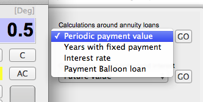
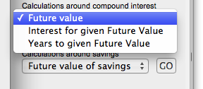
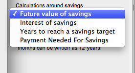

A couple of financial functions are located on the right side drawer when you click "Financial". On the drawer, you will find 3 popup buttons, where you can choose function in the respective group - and then press "GO". The groups are :
- Annuity loan calculations
- Interest and future value calculations araound bank deposits.
- Calculations around savings.
Annuity loan calculations

Interest and future value calculations araound bank deposits.

Savings calculations.
